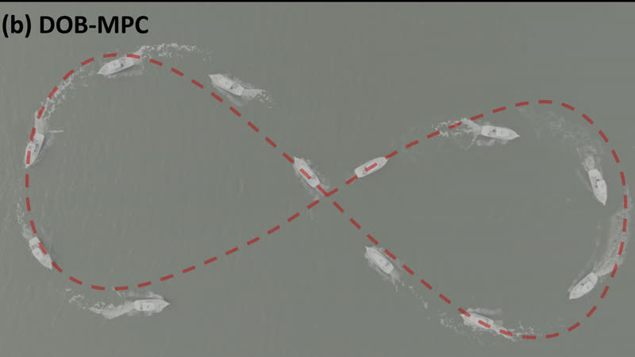
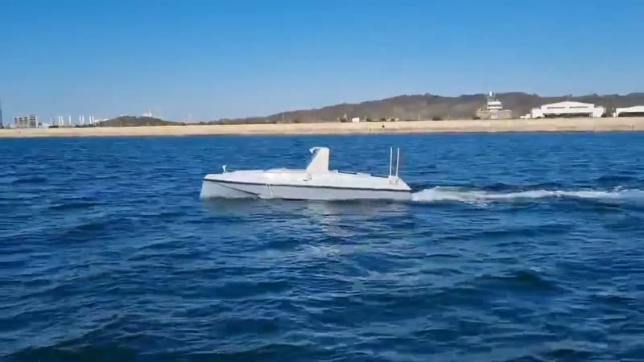
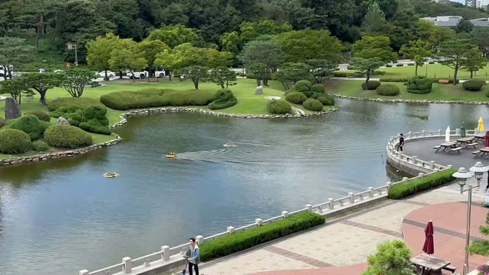

About
I am a graduate researcher at KAIST developing control and autonomy for marine robots. My dream is to realize autonomous surface vehicles (ASVs) that can be trusted to operate reliably at sea. To get there, I develop robust, safety-aware control for underactuated ASVs that must maneuver under persistent wind, wave, and current disturbances. I focus on the problems that actually arise aboard real vessels and prove the results on the water through open-sea and pool experiments.
Featured Research
Project pages, videos, and experimental results.

Project page
Safe Cradle Recovery of an Underactuated USV ↗
DOB-MPC with robust adaptive control barrier functions for autonomously docking a USV into a side-mounted cradle — validated in Monte Carlo studies and pool experiments.
View project →
OCEANS 2026 · Accepted
Robust Trajectory Tracking via Disturbance Observer-Based MPC
Embedding a real-time disturbance estimate inside the MPC prediction model, cutting tracking RMSE by up to 59% in open-sea experiments on the 8 m USV AURA.
View project →Side Projects
Ongoing experiments and demonstrations.

In progress
High-Speed ASV Control
Path following of a planing-hull ASV averaging 48 knots, using a surge full range speed model and LOS guidance.
View project →
Field demos
Trajectory Tracking & Obstacle Avoidance
On-water MPC demonstrations with synchronized real-time tracking plots.
View project →Education
-
2022 – presentIntegrated M.S.–Ph.D., Mechanical Engineering, KAISTMobile Robotics & Intelligence Laboratory (MORIN) · Advisor: Prof. Jinwhan Kim
-
2017 – 2021B.S., Mechanical Engineering, KAIST
Experience
-
2021 – 2024USV Team Leader & Control Engineer · Team KAISTMohamed Bin Zayed International Robotics Challenge (MBZIRC) Maritime Grand Challenge · video
-
2024 – presentControl Engineer, Collaborative Project · Season3 Co. & LIG Co.
Awards & Honors
-
2025🏆 KAIST Challenge AwardKAIST
-
2021 – 2024🥈 Runners-up · MBZIRC Maritime Grand ChallengeMohamed Bin Zayed International Robotics Challenge · video
Publications
Selected peer-reviewed papers.
-
Robust Trajectory Tracking for Unmanned Surface Vehicles via Disturbance Observer-Based MPC
-
Turning circle-based control barrier function for efficient collision avoidance of nonholonomic vehicles
-
Robust Trajectory Tracking for Surface Vehicles via L₁-Augmented Model Predictive Control
-
Parameter-varying Koopman operator for nonlinear system modeling and control
-
Robust path tracking and obstacle avoidance of autonomous ship using stochastic model predictive control